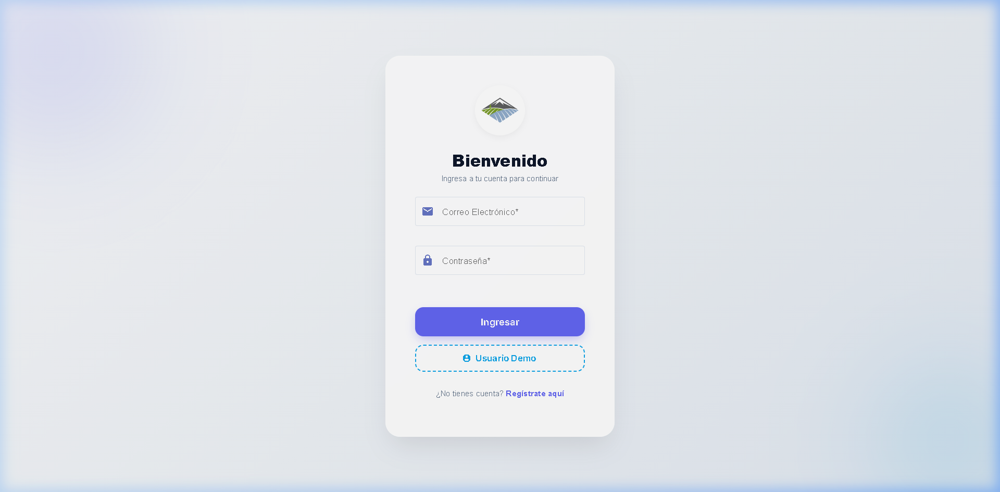
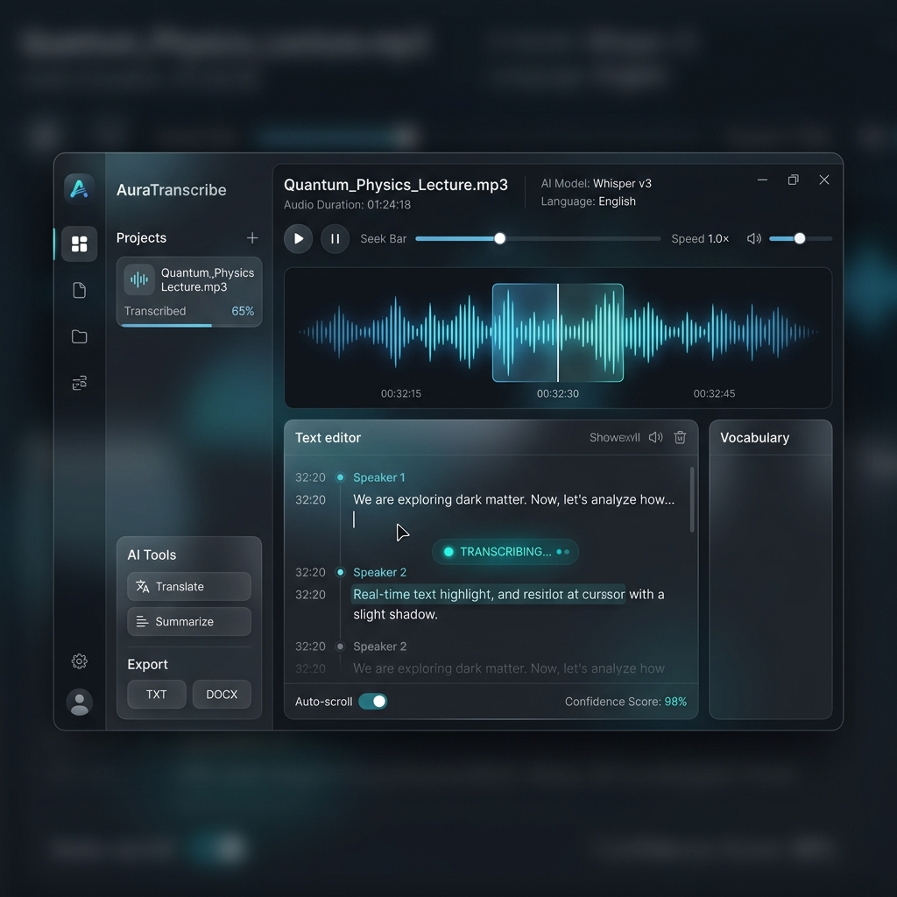
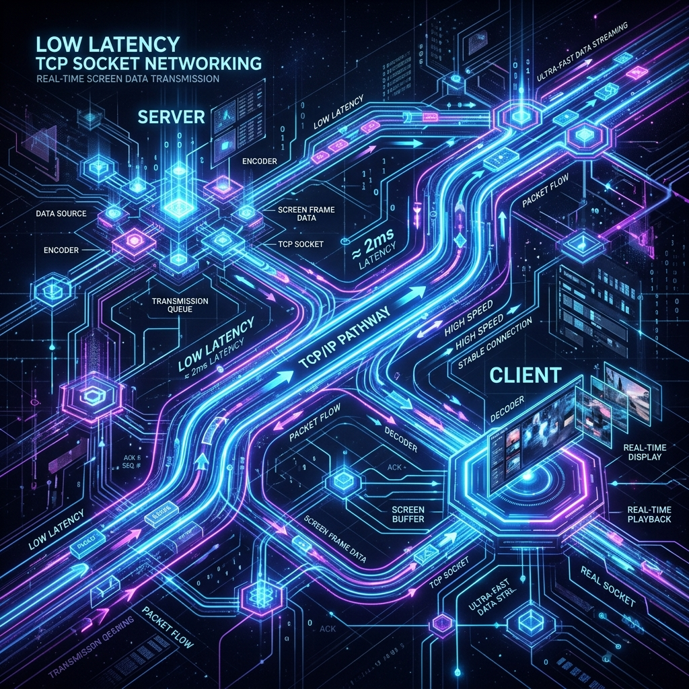
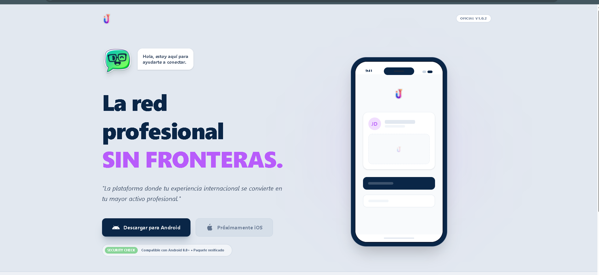

Full Stack Engineer
Especialista en
Microservicios & Desarrollo Web
4+ años de experiencia verificada construyendo sistemas escalables. Especializado en el desarrollo de soluciones integrales, combinando interfaces de usuario dinámicas en el frontend (React, Angular) con infraestructuras y APIs en el backend (Go, Python, Node.js).
Experiencia Destacada
Ingeniero de Software
EmQu Technologies
QPortal (Inteligencia Operativa)
Desarrollo de la arquitectura backend para una plataforma de inteligencia operativa utilizando una arquitectura orientada a microservicios con Python y Flask. Implementación y gestión de bases de datos avanzadas, combinando MongoDB para el almacenamiento flexible de documentos y Neo4j (bases de datos de grafos) para mapear y consultar relaciones complejas de datos de manera eficiente.
QUaccess (Gestión de Accesos e Identidad)
Desarrollo integral de una solución de control de accesos, estructurando bases de datos relacionales robustas y seguras en PostgreSQL. Construcción de la lógica de negocio en el lado del servidor utilizando PHP y creación de interfaces de usuario dinámicas y responsivas en el frontend mediante Angular.
WorkHive (Gestión de Fuerza Laboral)
Construcción de una plataforma integral para la gestión de equipos y procesos, diseñando la interfaz interactiva del cliente utilizando React. Diseño e implementación de una API eficiente y altamente consultable utilizando GraphQL sobre un backend de Python, respaldado por PostgreSQL para la integridad de los datos transaccionales.
Proyectos Destacados

Llanito Express
Aplicación web premium de transporte bajo demanda (ride-sharing). Cuenta con geolocalización por GPS (Nominatim), trazado de rutas, cotización de tarifas en vivo y un monedero digital (Llanito Pay) con diseño interactivo 3D en Glassmorphism.

TranscripIA
Aplicación de escritorio con integración de IA para transcripción de audio eficiente y persistencia escalable. Implementa flujos asíncronos, exportación multiformato y sincronización con MongoDB Atlas.

SocketSC (Administrador Remoto)
Aplicación nativa Android (100% Kotlin) para transmisión de pantalla en tiempo real. Utiliza Sockets TCP puros para operar sin latencia en redes locales y JmDNS para descubrimiento automático (Zero-Configuration).

Inmijobs
Plataforma y ecosistema digital distribuido con arquitectura full-stack orientada a la inserción laboral de inmigrantes, integrando perfiles profesionales, networking y bolsa de empleo escalable.
Dominios Técnicos
Backend
- Go (Gin/Echo)
- Python (FastAPI/Flask)
- Node.js
- PHP (Laravel)
Frontend
- Angular
- React
- WordPress
- Diseño responsivo
Databases
- PostgreSQL
- MySQL
- MongoDB
- Neo4j
Especialidades
- Sockets TCP
- Integración de IA
- APIs GraphQL
- APIs REST
Prácticas de Ingeniería
Enfoque técnico orientado a la calidad, seguridad y escalabilidad.
Testing Integrado
Implementación de pruebas unitarias y validación de endpoints en microservicios.
Seguridad y Configuración
Gestión segura de configuración mediante variables de entorno y aislamiento de credenciales.
Despliegue Rápido
Documentación técnica orientada a despliegue rápido (Docker).